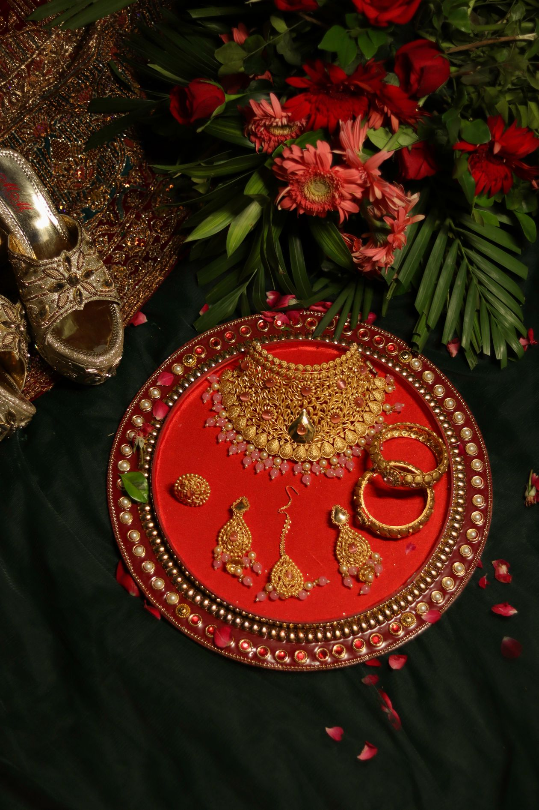
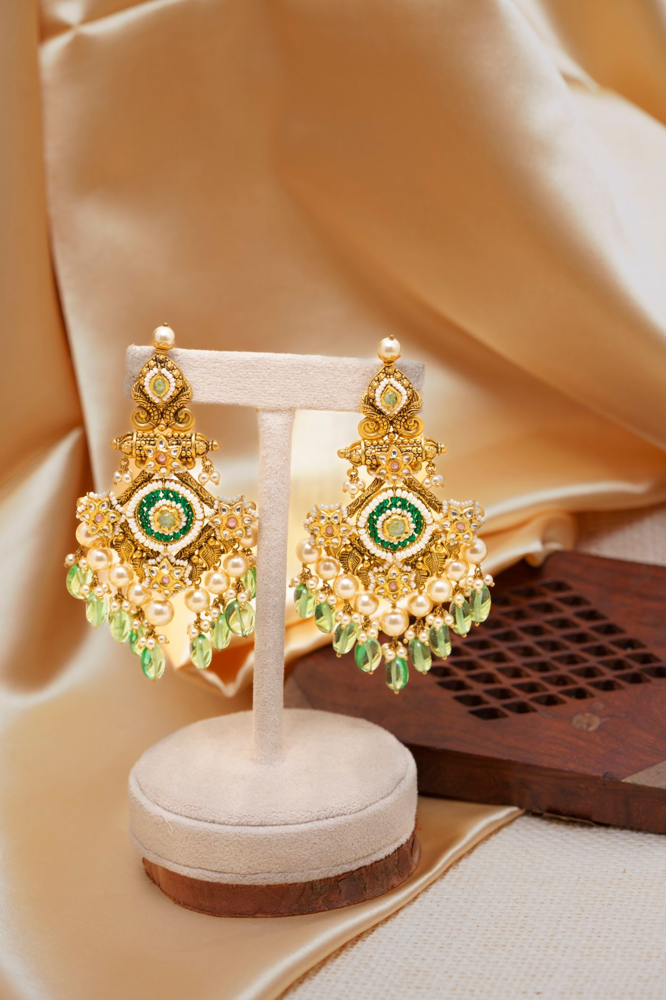
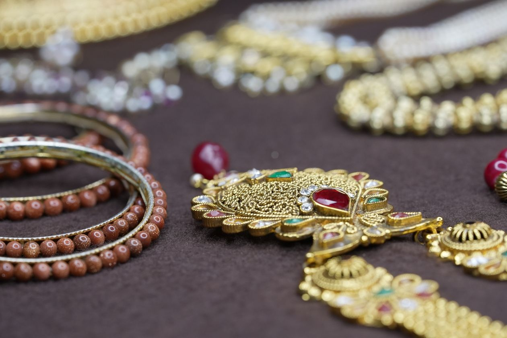

Every commission leaves the bench with a stone map: each stone drawn, weighed and placed. These three are told the way they happened — the asking, the bench work, and the ending, including the parts that did not go smoothly.

1 · The Gulab Polki Choker
Delivered — December 2025, Jaipur
Year
2025
Client
A Jaipur family; stones from the bride's grandmother
Medium
22k gold, 9 uncut polki, closed-back kundan
Stones
9 × medium polki, 4.50 ct in total
Gold weight
22.2 g (16.2 g in cups, 6.0 g linking allowance)
Dimensions
38 cm strand, centre drop 4.2 cm
Bench time
17 days
Price
₹3,44,040 — priced on the home-page rate card
The ask. The family brought a necklace made in the 1960s: the cord had gone, two cups were crushed, and the foil had dulled to grey. They wanted the nine polki reset as a choker for the granddaughter's December wedding — and they wanted the stones left exactly as they were, uneven tops and all.
The work. Each stone was drawn and weighed before it left its old cup. New cups were raised one by one; because polki are cut by hand, no two cups match, and each foil bed was cut to its stone. The third stone's first seat cracked at the rim — the cup was melted down and raised again rather than patched. The backs were closed in the traditional way, and the grandmother's pendant was rebuilt as a maang tikka so the set stayed a set.
The outcome. Delivered six days before the wedding and worn with the original pendant's chain. The family has since brought two more heirloom pieces to the bench, which is how this atelier gets most of its work.
She refused to polish my mother's stones flat to make her own work easier. The choker sits exactly the way the old necklace did.

2 · The Panna Jhumka Pair
Delivered — October 2024, Jaipur
Year
2024
Client
A wedding singer, for her own sangeet season
Medium
22k gold, 14 emeralds, open-back kundan
Stones
14 × small emeralds, 3.50 ct in total
Gold weight
12.4 g the pair
Dimensions
6.8 cm drop
Bench time
9 days
Price
₹1,24,500
The ask. Jhumkas with presence that would not punish the wearer. The client sings at sangeets for four and five hours at a stretch and had stopped wearing her heavier pair by the second hour.
The work. The emeralds were set open-backed, which does two things: light passes through the stone so the green stays alive under stage lighting, and the cup needs less gold. The bells below were spun hollow instead of solid — the single biggest weight saving in the piece. The hooks were thickened slightly and curved longer, because a light earring that falls out is worse than a heavy one.
The outcome. Worn through a full five-hour sangeet the week after delivery. The following spring the client commissioned the same pair in ruby, at the same weight.

3 · The Merchant's Necklace, Restored
Delivered — August 2023, Jaipur
Year
2023 (piece itself c. 1932)
Client
The great-grandson of the original owner
Medium
Antique kundan necklace, 31 stones, mixed polki and glass
Work done
Foil replaced on 7 stones; lac core renewed; 4 seats left untouched
Gold added
3.1 g, recorded on the stone map
Turnaround
5 weeks
Bench time
23 days
Price
₹86,000, restoration
The ask. A necklace that had belonged to a Johari Bazaar merchant's wife, unworn for decades: eleven stones loose in their cups, foil blackened, the lac core crumbling. The family wanted it wearable for a granddaughter — not remade, wearable.
The work. Before any cup was opened, the whole necklace was photographed and every stone mapped to its seat. Seven stones needed new foil; four seats were sound and were left exactly as the original setter made them — a restorer's first job is knowing what not to touch. The lac core was renewed in sections so the strand never lost its shape.
The outcome. Two stones, both glass, had cracks running through their seats. Resetting them would have finished them. They went back to the family unset, in a lined box, with a note explaining the judgement and what it would take to copy them in new stone. The necklace was worn that winter. Restoration work is where this bench's rule comes from: a stone I cannot seat properly does not get set, whatever the calendar says.